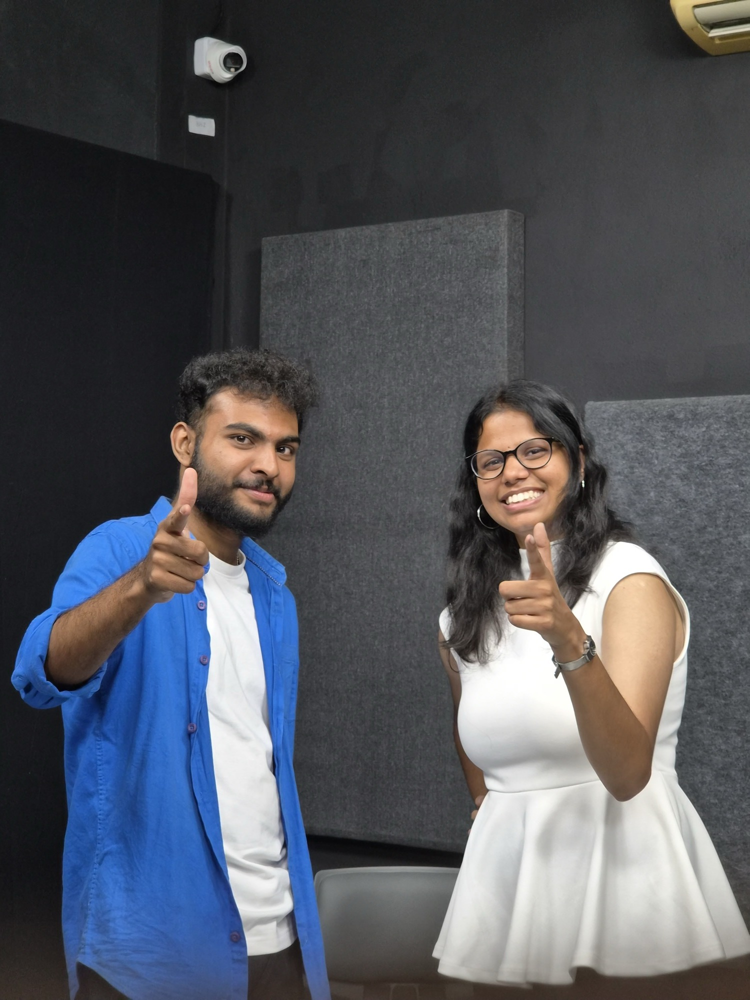
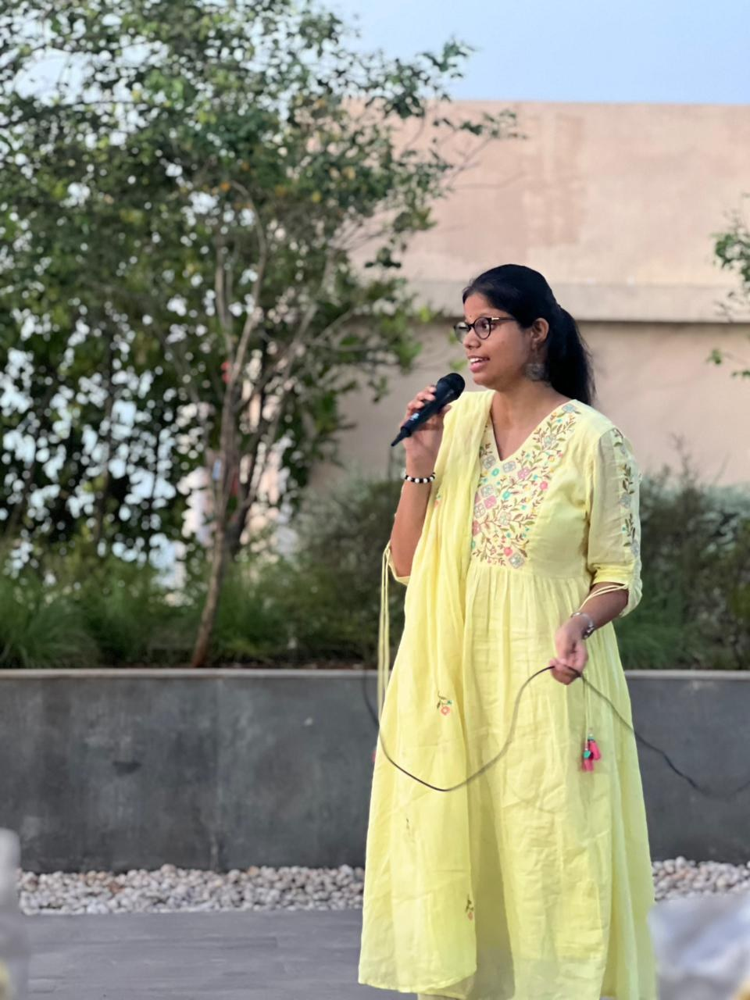
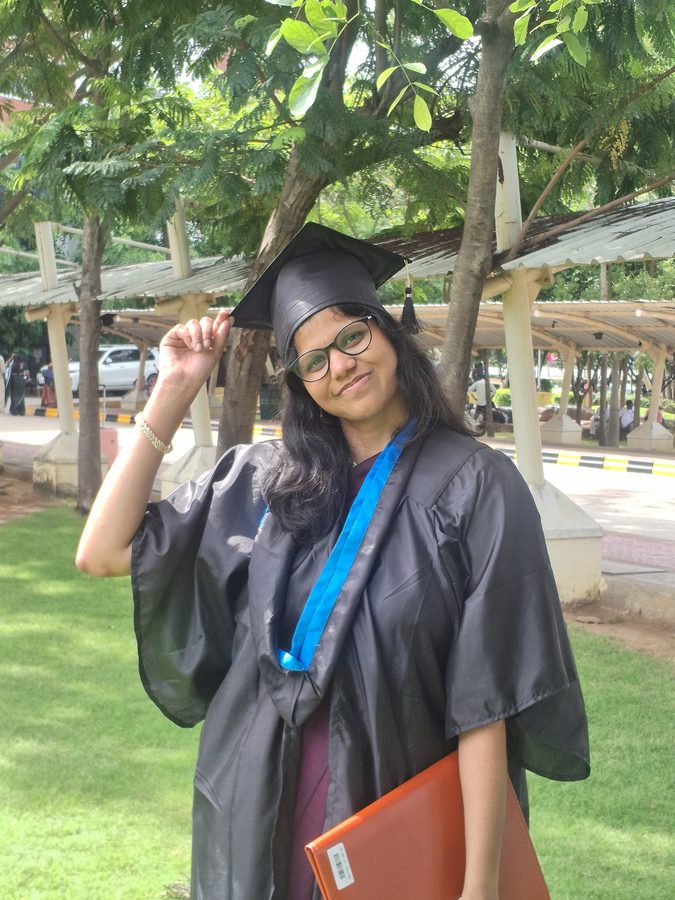

July 18, 2026
Enna Solla Pogiraai??
A storytelling set built around the pull between what we want to say and what we actually say. A manifested moment — her stories before a packed audience.
Punch, Alwarpet, Chennai
For hearts that feel too much. P. V. Akhila writes and performs stories — and her book Pragma has already found 100+ homes. P. V. Akhila — M.Sc. Data Science, quantum machine learning researcher. AutoML at C-DAC, noise-resilient quantum models, and a soft spot for hard problems.
By day she spins feeling into story. But flip the switch — and you'll meet the engineer who speaks fluent quantum. By night she trains neural networks and tames quantum noise. But flip the switch — and you'll meet the storyteller who holds a room breathless.
Told year by year — how the words found their voice, and the rooms found their storyteller. Year by year — how curiosity became craft, from physics classrooms to quantum circuits.
Pragma is a fiction verse novelette — love told the way it actually happens: slowly, honestly, in fragments that find you. Written for the ones who feel everything and say little.
Published with Notion Press, it has travelled far beyond a bookshelf — into open mics, storytelling sets, and the hands of readers who write back.
Storytelling sets, open mics and shared stages across Chennai — narrative, emotion, a room that leans in.
A storytelling set built around the pull between what we want to say and what we actually say. A manifested moment — her stories before a packed audience.

When a storyteller meets a stand-up comedian. One evening that makes you laugh first — and leaves you with a story you'll never forget.

Tape A Tale (Ghar) Chennai — "My heart still waits for you", "Vo aakhri chitthi". Crack Open 3.0, Aval Women's Day and other open mic: rooms that lean in.
Her individual set — narrative, emotion, a room that leans in.
The signature duo format with Naresh S — laughter that hands the mic to feeling.
For events that need a performer who can hold and work a room.

Yes — she also builds intelligent machines. M.Sc. Data Science, quantum ML researcher, and an engineer who likes her systems settled and her results reproducible. M.Sc. Data Science (VIT Chennai). I work across ML, deep learning and quantum machine learning — end-to-end pipelines, honest benchmarks, reproducible research.
Benchmarked AUC degradation across 4 quantum noise types at 3 severity levels for breast-cancer mammogram classification.
View on GitHub →Hybrid unsupervised-to-supervised pipeline on ShanghaiTech — 97.79% accuracy, 88.63% AUC-ROC, deployed live.
View on GitHub →Image-driven batch inference over 1,000+ shelf images with temporal forecasting for predictive restocking.
View on GitHub →Local PDF question-answering with retrieval-augmented generation and vector-index caching for faster inference.
View on GitHub →College fests, cultural nights, curated shows, private evenings — for rooms ready to feel something. ML roles, quantum ML collaboration, research conversations — Chennai, open to relocation.
College fests, cultural nights, curated shows, private evenings — for rooms ready to feel something.
pvakhila06@gmail.com @writer___akhilaML roles, quantum ML collaboration, research conversations — Chennai, open to relocation.
akhilapv7077@gmail.com LinkedIn GitHub